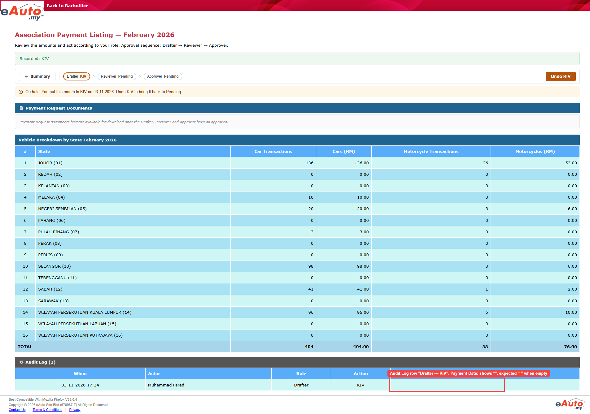
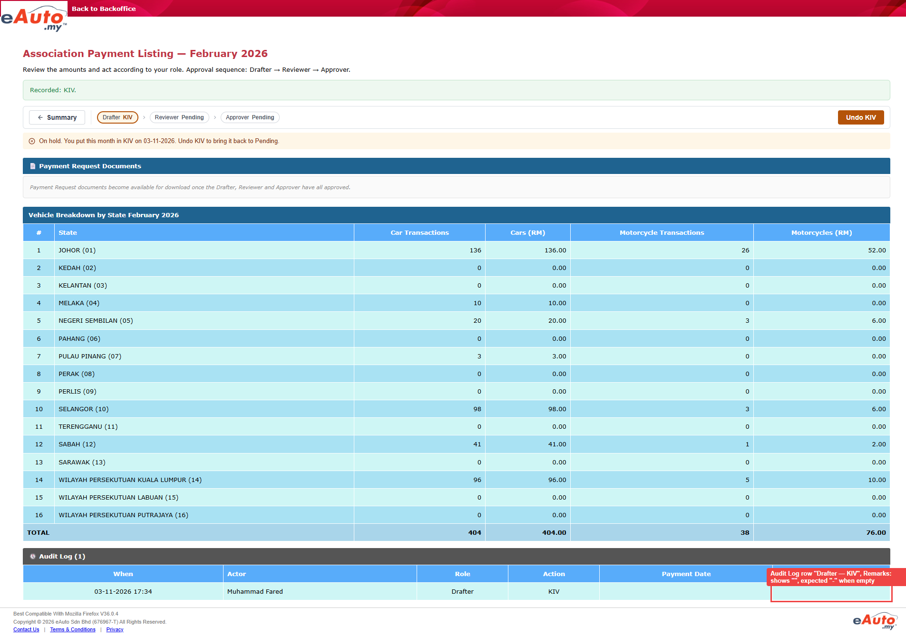

Actual: Audit Log (1): 03-11-2026 17:34, Drafter, KIV, Payment Date empty, Remarks empty; Drafter Status shows KIV Expected: Remarks shows "-" when empty (mock-up association-payment-listing-mockup_20260731.html line 548: "(e.remarks||'-')"; Faizuddin, dashboard chat 2026-11-02 08:02: follow the mock-up for empty fields showing '-'). The SRD (REQ-015 — Approval audit trail) and the TS do not say what an empty cell shows. Payment Date "-" has no mock-up source: the mock-up Audit Log has 5 columns and none is Payment Date [unconfirmed].
Triage: defect (plausible) — Both screenshots show the new Drafter KIV row with blank Payment Date and Remarks cells; the mock-up renders an empty Remarks as "-" (line 548). Same kind of mock-up difference as the Role/Action wording QA-Issue EAINT-12738 and the When format QA-Issue EAINT-12739, but a different cell, so not the same ticket.
Ruled out: Script read the wrong cell: the red boxes sit on the blank Payment Date and Remarks cells of the Drafter KIV row; KIV itself failed: Drafter Status shows KIV, banner shows Recorded: KIV., Audit Log (1) has the Drafter KIV row dated 03-11-2026, which is today; Same as the earlier finding for this TS (12028_TS21-65ce6428-3377-45f9-9984-af18141b6b86): that one was a Details page wait that ended too early; this run passed it; Already raised: EAINT-12738 covers Role/Action wording and EAINT-12739 covers the When date format only
Row 5 (12028_TS21) Test Objective: Verify Drafter KIV sets Drafter Status KIV and logs it. Test Steps: 1. Login to BO as Drafter 2. Click [View] on a month with all statuses Pending 3. Click [KIV] Expected Result: Ensure: 1. Details -> Drafter Status KIV 2. Details -> Audit Log "Drafter — KIV" with date/time 3. Summary -> Drafter Status KIV12028_TS21
Nothing on this. The expected result comes from the TS.


The test's "toBe" check failed — expected "true", got "false".Run error · step "Check the Audit Log has one new "Drafter — KIV" row dated today"